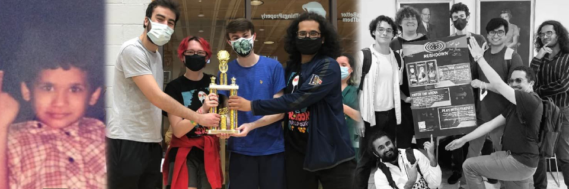
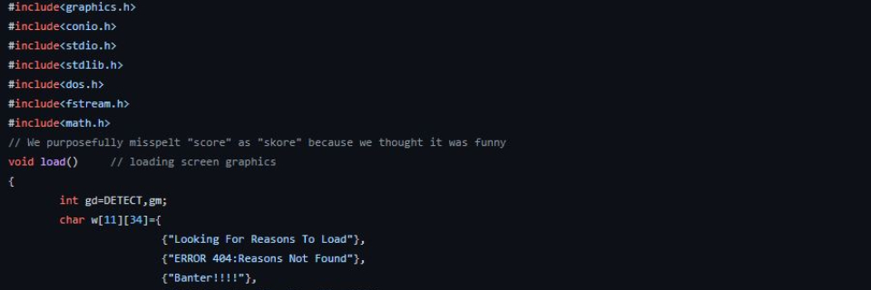
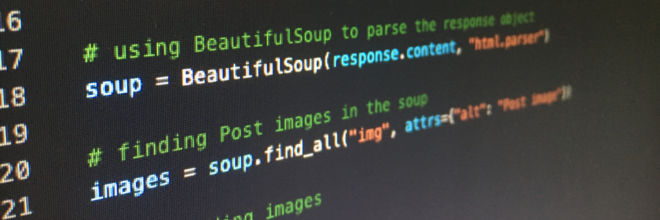
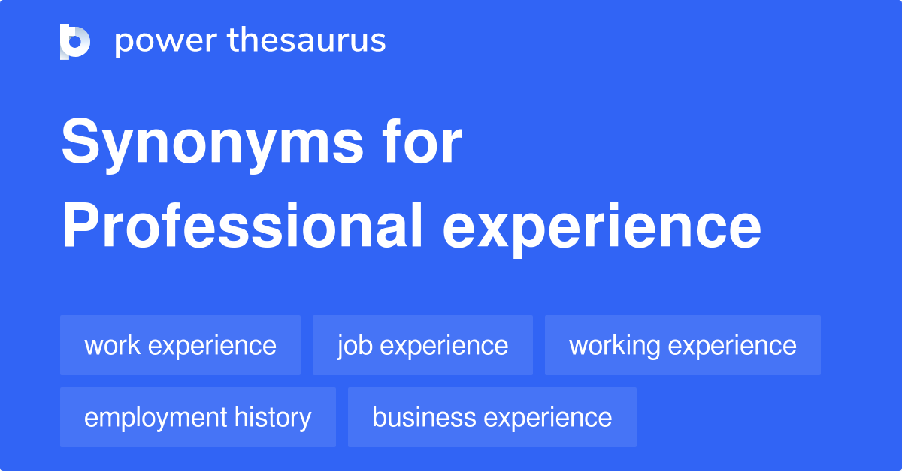
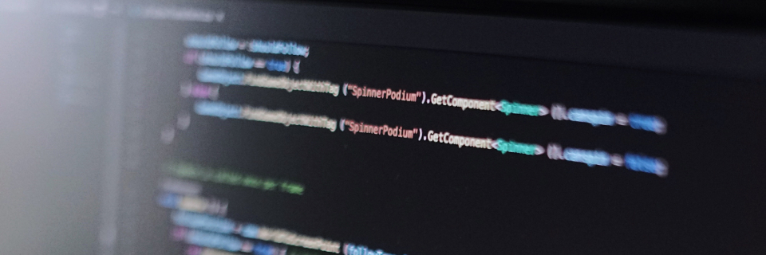
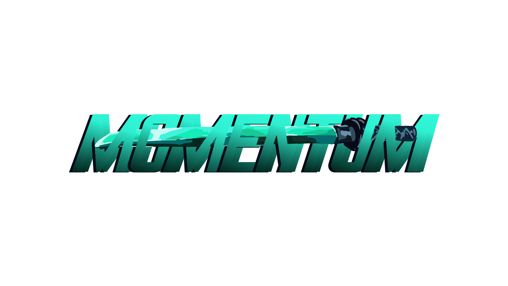
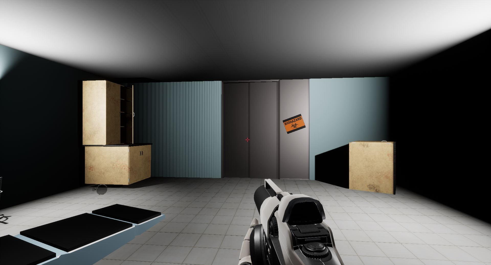
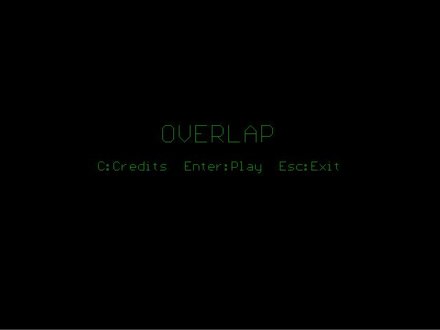
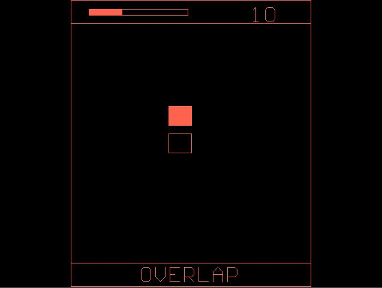
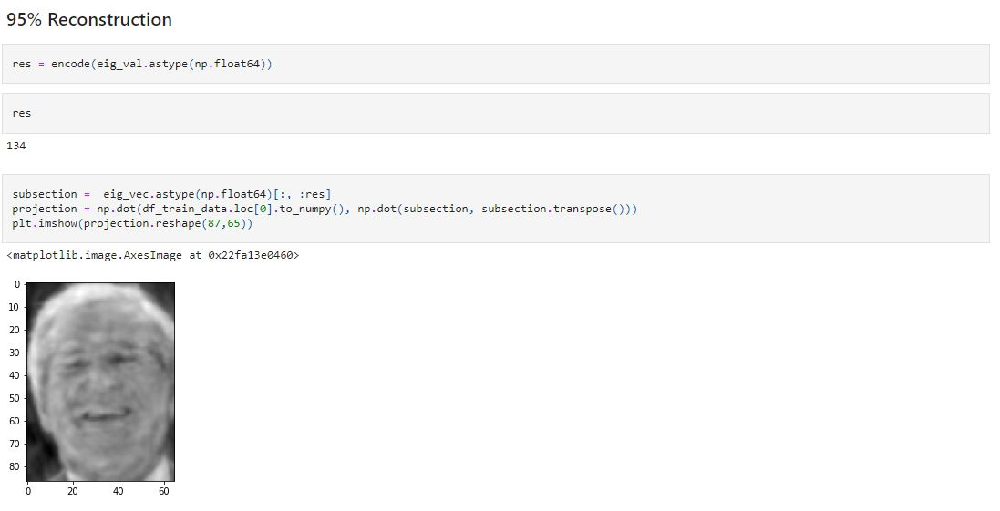

|| Data Engineer | Software Engineer | Data Scientist | Game Programmer | AI/ML Enthusiast ||
About

With a Bachelor of Science in Computer Science from Drexel University—concentrating in Game Programming and Artificial Intelligence—I bring over a decade of programming expertise to the table. My strong mathematical foundation heavily influences my analytical, systems-level approach to solving complex engineering challenges.
Throughout my career across various data engineering, software, and AI roles, my core responsibility has remained consistent: solving multifaceted problems. From optimizing high-stakes databases to architecting cloud data pipelines, I focus on executing work that is scalable, efficient, and well-designed. I have also embraced leadership roles, serving as the Programming Team Lead for Rushdown, Vice Captain of the Drexel Fencing Team (Épée), and spearheading several academic and technical projects.
You can find a detailed breakdown of my professional experience here.
What is my story so far?
Born in New Delhi, India, in 1999, my life has been a global journey spanning multiple countries and cultures. I spent my formative years in India, Singapore, and the United Arab Emirates, before moving to the United States (2017 – December 2024) to earn my degree. More recently, I spent a year working in India's tech hub, Bengaluru (March 2025 – April 2026), and am currently based in Vaishali, Delhi NCR (April 2026 – Present). Transitioning between diverse environments has deeply shaped my holistic approach to life and engineering, cultivating strong traits like adaptability, flexibility, and tenacity.
I completed my 9th and 10th grades at Delhi Private School - Dubai before transferring to Delhi Public School - Noida to finish high school. Despite the challenges of transferring schools across countries, I put in the work to earn the A.J. Drexel Scholarship, which allowed me to attend Drexel University.

What got me into programming?
My affinity for programming began in the 6th grade. By high school, I was building a foundation in Object-Oriented Programming (Turbo C++) and SQL. Driven by an innate passion for designing interacting systems, I created my first 2D puzzle game, Overlap.
Developing Overlap pushed me far beyond the standard syllabus, teaching me how to leverage graphics libraries and optimize complex logic. Programming games is similar to designing large systems and ensuring they all interact precisely as intended—skills that naturally translated into designing large-scale software architectures.

Why did I choose to study what I did?
Motivated by early successes in game development, I pursued Computer Science at Drexel University. My drive for excellence led me to incorporate an artificial intelligence track, completing nearly two terms' worth of extra coursework.
Out of a deep interest in continuous learning, I took classes in Mathematics, Open Data Research, Animation, Game Art, Photography, Philosophy, and Psychology. I excelled in my core computer science classes, eventually becoming a teaching assistant for CS281 (Systems Architecture) and CS375 (Web Development).
What do I like outside of class?
Outside of engineering, I love traveling, photography, writing, working out, and playing sports. After playing football and tennis in high school, I challenged myself to learn fencing at Drexel. Through rigorous dedication, I secured 3rd place individually at the BWCFC championships, helping the team secure 2nd place in the Épée category. Beyond fencing, I am also a member of Drexel Speaks and the Drexel E-Sports and Gaming Association.
I am also deeply interested in data activism. During a research project analyzing US Census Demographics Data, I utilized Python and Pandas to highlight evidence of Redlining in Philadelphia, demonstrating how minority and lower-income populations remain concentrated near industrial and traffic-heavy zones.
Looking Ahead
As I look to the future, my ambitions span academia, athletics, and entrepreneurship. I am actively seeking higher education opportunities for a Master's degree in Europe to further deepen my technical expertise and research capabilities. Athletically, I am training rigorously to compete both nationally and internationally in Épée fencing. Ultimately, my long-term vision is to merge my technical acumen, creative drive, and leadership experience to open my own independent game studio, developing innovative and systems-driven experiences.
Professional Experience

I have built a robust career spanning data engineering, software development, and game programming, characterized by an interdisciplinary approach to system design. In descending chronological order:
Spearheading the design and deployment of enterprise-level data architectures, leveraging Azure Synapse Analytics for scalable data warehousing and processing.
Leading a cross-functional IT and data team to modernize data infrastructure, ensuring seamless integration and data governance across multiple business units.
Designing and maintaining robust ETL/ELT pipelines, utilizing Python and advanced cloud resources to drive actionable business intelligence.
Managing IT strategy and operations, optimizing cloud expenditure, and ensuring high availability and security of enterprise systems.
Deputy General Manager - IT
Gokaldas Exports March 2025 - April 2026
Engineered and optimized comprehensive data pipelines to integrate high-volume manufacturing and supply chain data into SAP HANA environments.
Developed custom data ingestion and transformation microservices using Python and Flask, significantly improving data accessibility and operational reporting.
Partnered with analytics and business teams to architect data models that supported real-time decision-making across global export operations.
Improved overall query performance and data pipeline reliability by implementing best practices in CI/CD and database indexing.
Architected and deployed the firm's first end-to-end ETL pipeline entirely on AWS, eliminating hardware bottlenecks and streamlining market data sourcing.
Engineered custom data analysis tools to empower portfolio managers in their decision-making processes.
Optimized critical SQL databases, detangling complex asynchronous overwrites to prevent catastrophic data loss.
Spearheaded the adoption of modern development practices including Git (BitBucket), Jira, and comprehensive code documentation.
Researched and deployed a cryptocurrency validator, elevating the firm's FinTech profile.
Developed features for a flagship OSHA web reporting service, managing hierarchical user access.
Optimized SQL queries to improve database response times by 40%, directly resolving client-ticketed performance bugs.
Automated the compilation of weekly error reports using C#, reducing a one-hour manual task to a process requiring seconds.
Game Projects

Rushdown
September 2021 – May 2022
A 3v3 online multiplayer action platformer featuring advanced mobility mechanics. With three distinct characters boasting thematic abilities, it redefines the classic game of freeze-tag.

Momentum
April 2021 – September 2021
A hex-grid strategy game featuring a dynamic, momentum-based soundtrack built in Unity 2D.

Escape The Lab
December 2020
A themed VR puzzle room game developed in a 1-week challenge utilizing Unreal Engine 4 and C++.
Beat Masher
May 2020
A rhythm-based jumping game featuring procedurally generated obstacles synced to music.

Overlap
January 2016 – December 2016
An arcade box-stacking game built entirely from scratch using Turbo C++ and native graphic libraries.
Utilized native graphics libraries to render stylized animations, menus, and loading visuals.
Implemented procedural difficulty scaling and high-score memory management optimization.
Developed streak reward system.

Programming Projects
Adversarial Attacks in NLP
March 2022
K-Means Clustering
March 2022
KNN & PCA
March 2022
Logistic Regression & Classifiers
March 2022
IFGSM Attack on CIFAR-10
January 2022
Linear Regression & Gradient Descent
January 2022
Rubik's Cube Solver
Algorithm Design
Adversarial Attacks in NLP
March 2022
Concept
Explored textual adversarial attacks in Natural Language Processing (NLP). The project focused on generating text perturbations that preserve the semantic meaning of a sentence while successfully fooling trained NLP models (used for sentiment evaluation and toxic speech detection).
^ Reduced 100 dimension data set into 2 dimensions

Logistic Regression & Classifiers
March 2022
Implemented Logistic Regression and Naïve Bayes Classifiers in Jupyter Notebooks. The project features comprehensive data visualization and statistical evaluation including Precision, Recall, F-Measure, and Accuracy metrics.
For my first blog post, I will be deconstructing the plug-in chips system in Nier Automata.
We will be looking at the game mechanics, the design choices, and the implications of the system on the player experience.
We will also be looking at the game design philosophy behind the plug-in chips system and how it affects the player experience.